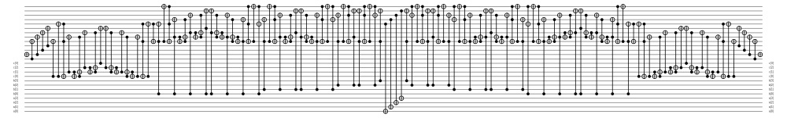

The jcc Language
jcc uses a language based on a modified version of Janus.
Semicolons
Semicolons are used at the end of each statement. This allows parsing without whitespace dependence.
Variables
Declared variables which are not initialized can be thought of as the inputs to the circuit. ##Declaration Variables are initialized by typing their name on a line. For example:
a b;Will declare the variables x1 and x2.
Initialization
Variables can be initialized to some value. This can be useful for testing a circuit. For example
a = 5;
a ^= 1;
Compiles to: 
In-Place Modification
Addition, subtraction, and bitwise XOR are all operations that can be preformed in place. So the +=, -=, and ^= operators are all used preform in-place modifications to the LHS variable. For example:
a b;
a += b;
 In this example \(b\) is unmodified and \(a\) becomes \(a+b\mod n\). Note that no additional ancilla are used. These modification statements very important for accumulating information about a computation as it is preformed without allocating additional space.
In this example \(b\) is unmodified and \(a\) becomes \(a+b\mod n\). Note that no additional ancilla are used. These modification statements very important for accumulating information about a computation as it is preformed without allocating additional space.
Arithmetic Expressions
Some more complex operations are not preformed in place. For example:
a b c;
a ^= b*(c+2);
 Here we see that the expression is generated. The result is then applied to \(a\) with a bitwise XOR. Generating the expression requires a temporary allocation of ancilla in excess of the space allocated for variables. This ancilla is however completely cleaned up afterword.
Conditionals
The general structure of an if conditional is as follows:
if <cond> then
<statements>
else
<statements>
fi <assertion>The assertion must be a statement that is true if and only if the first branch was taken. In this case it is up to the programmer to correctly choose a conditional. This can be tested by running simulations of possible input data. Failure to fully clean up ancilla would indicate a possibly incorrect assertion.